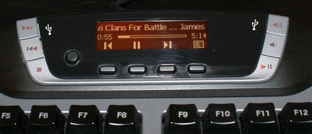

|
Keyboard-Display
|
Seit Version 4.1 unterstützt Nemp das Anzeigen des aktuellen
Titels (und auch die Steuerung) über das Display einer
Tastatur wie z.B. der Logitech G15.

Die Unterstützung ist nicht direkt in Nemp integriert, sondern
wird über ein Zusatz-Tool realisiert. Dieses Tool nutzt die
Nemp-API, um Informationen anzuzeigen und eine rudimentäre
Steuerung des Players zu ermöglichen.
Tipp: Wenn Sie eine andere Tastatur
mit Display haben, dann können Sie theoretisch ein eigenes Tool
schreiben, um ihre Tastatur zu unterstützen. Wenn Sie selber
programmieren können (oder jemand in ihrem Freundeskreis), dann
kontaktieren Sie mich bitte für weitere Informationen.